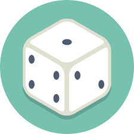

 GN
Aquí vamos a poder conocer las reseñas de los juegos para ayudarnos a elegir el mejor juego para comprar.
Shamans
En este video LatinLudens nos da su opinion de este juego de cartas
Rajas of the Ganges
Aqui tenemos la review de este juego traída por Tom Vasel
Robots
En este video LatinLudens nos da su opinion de este juego de dados
The Red Cathedral
Aqui tenemos la review de este juego traída por Tom Vasel
Cascadia
En este video LatinLudens nos da su opinion del Cascadia, que lo disfruten!
Monster Expedition
En este video LatinLudens de este maravilloso juego de quest de monstruos
Tapestry
Vamos a conocer la reseña de este maravilloso juego de civilizaciones
Tzolk'in
Reseña sobre éste fabuloso juego que nos deja la gente de LatinLudens
Galaxy Trucker
Nos muestran en este caso el Galaxy Trucker, un juego simple del cual debemos tener referencia
CuBirds
Interesante juego a comparar que nos brinda la gente de LatinLudens
Lucky Numbers
Un juego familiar de posicionamiento de numeros del cual tenemos un veredicto!
Splendor
Aqui tenemos la review de este juego traída por Tom Vasel
Wingspan
Aqui tenemos la review de este juego traída por Tom Vasel
Patchwork: Winter Edition
Aqui tenemos la review de este juego traída por Tom Vasel
Gladius
Aqui tenemos la review de este juego traída por Tom Vasel
Lost Ruins of Arnak
Aqui tenemos la review de este juego traída por Tom Vasel